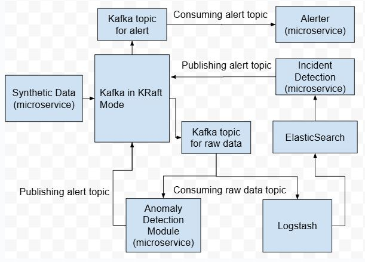
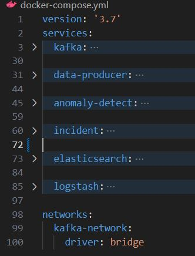

Blog #4: Designing an Alerter
Introduction
During work, I was tasked with designing and implementing an alerter tool to notify a specific set of users using an existing Elasticsearch database. The input came from an API gateway, which was fed into Elasticsearch. A Java program then fetched data from Elasticsearch and alerted users.
The issue was that since Elasticsearch and Logstash were open-source with licensing limitations, there were restrictions on the amount of data that could be processed. If Elasticsearch crashed, the API gateway was also affected. This project is an attempt to improve the design.
Tech Used
- Docker Compose
- Elasticsearch
- Logstash
- Kafka
- Python
- Flask
Improved design and component wise breakdown
The following is an overview of what we are trying to build here:

The source code can be found here
NOTE:
- Only one kafka service is deployed in kraft mode. This is done with the understanding that I have been resource poor both then and now.
- Only scalability and fault tolerance (within the limits of available resource) was considered during design. As for security, I have assumed that this will be a closed network.
Overview
- Synthetic Data : to generate data. It publishes raw data topic in Kafka.
- Incident Handling : to consume raw data topic and identify incidents from data available in elasticsearch DB. It will publish an alert topic to kafka.
- Kafka: pub/sub which act as buffer for generated data.
- Docker Compose: Used to simulate different servers and to ease the deployment of various services used in this project.
- Elasticsearch and Logstash: Used as one of the consumer for raw data topic from kafka and as storage for the generated data.
- Alerter: at present it is implemented as a separate incomplete module mainly to act as event based alerts from alert topic consumed from kafka.
Docker Compose
We will be using Docker Compose to run our application. The docker-compose.yml will have services for elasticsearch, logstash , kafka and other microservices. A snip it of the same can be seen below.

We ensure that Kafka, microservices, and the Elastic Stack are in the same network (from the above image - kafka-network) so as to simulate deployment of services in various servers but in the same network.
Usefull commands:
docker-compose up -d- Start the services in detached mode.docker-compose down -v- Stop and remove existing containers. The-vflag ensures volumes are removed for a clean start.
Synthetic Data
The purpose here is to generate synthetic data. In our case the data will be resembling a generic API response. This module will also act as a kafka producer (i.e., a application that publishes (writes) events to a Kafka cluster).
We are using confluent_kafka python library in this project. Ofcourse other python library are available, but for our purpose confluent_kafka is well-suited for use with Confluent Cloud and Confluent Platform. Basically I am keeping in mind the enterprise applications, which relates to most of my work.
We will be configuring producer as follows
conf = {'bootstrap.servers': '{kafka host}:{port}'}
producer = Producer(conf)
and publishing to our topic as follows
producer.produce('{topic}', key={key}, value = {message}, callback={function to handle kafka delivery report} )
producer.poll(0) # poll to handle delivery report
To ensure all messages are delivered (and to handle errors), it is good practice to wrap the producer in a try except finally block and placing producer.flush() in the finally block
Triggering Data Generation:
Use the following endpoint to generate data:
http://localhost:8080/data-gen/<number-of-entries>
This can be triggered via Postman or a curl GET request.
Kafka
Kafka can act as a buffer for data, allowing us to perform data aggregation and transformation before indexing it into Elasticsearch.
Kafka is running in Kraft mode (i.e., without Zookeeper as a controller). This is a fairly recent addition to kafka and based on the support seen, I believe this might the future direction of production ready deployment of kafka.
As such, some important configuration to keep in mind will be as follows:
- KAFKA_ENABLE_KRAFT=yes # Enable KRaft mode (no ZooKeeper required)
- KAFKA_CFG_NODE_ID=1
- KAFKA_CFG_PROCESS_ROLES=controller,broker
- KAFKA_CFG_CONTROLLER_QUORUM_VOTERS=1@{kafka host}:9093
Kafka Topic Management:
- Create a topic without Zookeeper (if not done via producer code):
- List existing topics:
docker exec -it {kafka container name} kafka-topics.sh --create --topic raw-data-topic --bootstrap-server localhost:9092 --partitions 1 --replication-factor 1
docker exec -it {kafka container name} kafka-topics.sh --list --bootstrap-server localhost:9092
Elasticsearch and Logstash
We run these services using docker compose.
Assuming there are no filtration required, the logstash.conf can be as staright forward as below:
input {
kafka {
bootstrap_servers => "{kafka host}:{port}"
topics => ["{topic name}"]
codec => "json"
}
}
output {
elasticsearch {
hosts => ["http://{elasticsearch host}:{port}"]
index => "{index name}"
}
stdout { codec => rubydebug } # Print logs for debugging
}
To check if data is being indexed in Elasticsearch:
curl -X GET "http://{elasticsearch host}:{port}/{index name}/_search?pretty"
Incident Handling
Primary purpose of this module is to fetch data from Elasticsearch based on queries and determine incident worth alerting.
Implementation Details:
- Query Elasticsearch for last 5 minutes of data.
query = {
"query" : {
"range": {
"@timestamp": {
"gte": "now-5m/m",
"lte": "now/m"
}
}
},
"_source" : [ "@timestamp", "message" ]
}
elasticsearch package and fetch based on the above mentioned query.
es = Elasticsearch(f"http://{HOST}:{PORT}")
rel = scan(
client = es,
query = query,
index = '{index name}',
raise_on_error=True
)
result = list(rel)
sleep()Alert Module
The purpose of this module is to fetch data from Kafka based on the topic writen by the Incident module.
We will be configuring consumer and subscribing to the topic as follows
conf = {'bootstrap.servers': '{kafka host}:{port}'}
consumer = Consumer(conf)
consumer.subscribe([topic])
And we can further proceed with adding logic for the consumer topic by polling
while True:
msg = consumer.poll(1.0) # timeout in seconds
if msg is None:
continue
if msg.error():
raise KafkaException(msg.error())
else:
message = msg.value().decode('utf-8')